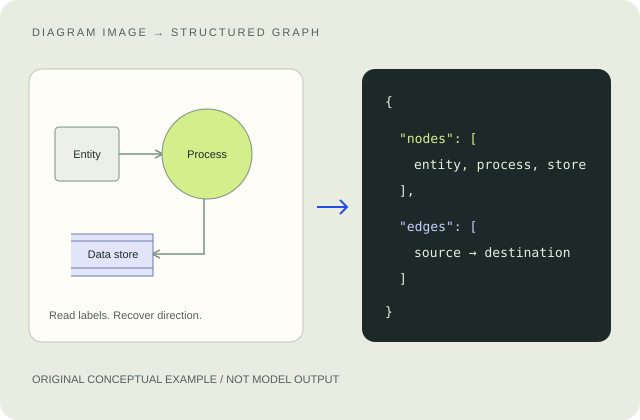

From a diagramto a readable structure.
A collaborative ULAB capstone combining OCR, a fine-tuned node classifier, arrow detection and geometric linking to turn diagram images into structured JSON.


Original conceptual example. Not a dataset image or model output. Select to inspect.
A diagram is more than its visible words.
Reading a data flow diagram means identifying the entities, processes and data stores—and recovering which way information moves between them.
Our three-semester capstone began by investigating weaknesses in general vision-language models. The team then narrowed the task to DFDs and chose a modular pipeline whose intermediate outputs could be inspected.
The final system combines OCR and learned components with explicit geometry, exporting a structured graph rather than relying only on a natural-language description.
Planning, testing and documentation.
My updated CV identifies contributions to planning, testing and documentation across the three-semester research project. I present the architecture and results as team work; I do not claim sole ownership of model training, pipeline implementation or application development.
This work developed my ability to follow a system across several components, distinguish different evaluation stages and document the relationship between an input, an intermediate result and the final output.
Institution: University of Liberal Arts Bangladesh · 2025–2026.
Read. Classify. Reconstruct. Export.
-
01
Read labels EasyOCR + phrase grouping
-
02
Identify components Qwen node classes + YOLO arrows
-
03
Link relationships Direction + endpoints + flow labels
-
04
Export structure Nodes + edges in JSON
Read the image
EasyOCR extracts visible labels and their positions. Phrase grouping brings fragmented words back together.
text: "Check request" position: [x, y, width, height]
The complete pipeline groups OCR text, filters node text from flow labels, classifies node candidates, detects arrow regions, recovers head/tail direction and assigns source/destination links. It then attaches flow labels, prunes unrelated text and exports JSON.
A Gradio application in the supplied source exposes stage visuals, structured output, explanation and batch-summary views. The explainer above uses a newly drawn illustrative example; it is not a capture of model output or a running AI demo.
Strong component results need context.
Saved standalone and end-to-end output tables
Bounding-box matching at IoU 0.50
Correct node-pair relationships
Arrow matching plus endpoint labels/classes
These are team-level saved evaluation results on ten project-made DFD images, with 80 ground-truth nodes and 106 ground-truth arrows. They are not scores on a broad independent benchmark or measurements of my individual performance.
The percentages are rounded from the relevant saved CSV tables, with F1 recomputed from the TP/FP/FN totals. Different output folders contain different runs; the selected end-to-end folder agrees with the CV's node and arrow figures. Another documentation report describes 97.5% integrated node F1, so that separate figure is not substituted here.
An inspectable research prototype.
OCR errors, truncated labels, arrow-direction mistakes and wrong source/destination assignments can propagate through the pipeline. The small controlled evaluation set limits what can be said about real-world generalisation, noisy scans and unusual or curved arrows.
The supplied Python modules pass syntax parsing, and the archive contains notebooks, saved outputs and an arrow model. Full inference was not run here: the fine-tuned Qwen classifier weights are not bundled locally, and the application relies on additional ML dependencies and model downloads.
The portfolio distributes only this public-facing explanation and an original conceptual illustration. It includes no private datasets, model weights, copyrighted research papers or complete unpublished reports.
Tools verified in the supplied source: EasyOCR, fine-tuned Qwen2.5-3B, YOLO11, structured JSON and Gradio. Raw research artifacts are retained outside the portfolio.